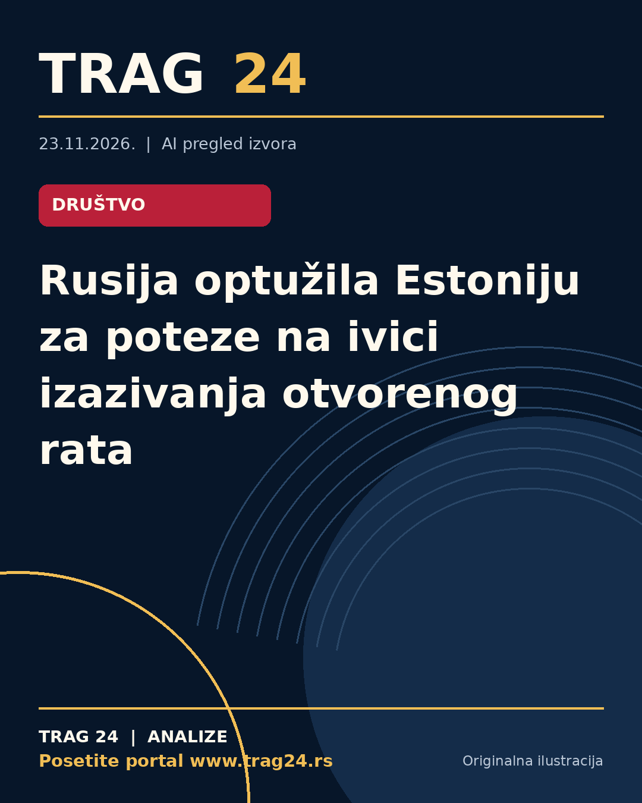

Rusija optužila Estoniju za poteze na ivici izazivanja otvorenog rata

ŠTA SE DOGODILO
Rusko Ministarstvo spoljnih poslova u ponedeljak je izrazilo oštru kritiku prema Estoniji, optuživši je za niz neprijateljskih aktivnosti koje su, kako tvrde, na ivici izazivanja otvorenog rata. Ove optužbe usledile su nakon što je Estonija najavila zatvaranje kopnene granice sa Rusijom od 1. decembra na period od najmanje šest meseci. Odluka Estonije usledila je nakon optužbi na račun ruskih bezbednosnih službi da su organizovale pokušaj podmetanja požara u jednoj estonskoj odbrambenoj firmi, što je Moskva demantovala.
HRONOLOGIJA
Estonija je objavila plan o zatvaranju graničnih prelaza sa Rusijom od 1. decembra na period od najmanje šest meseci. Rusko Ministarstvo spoljnih poslova potom je pozvalo estonskog otpravnika poslova u Moskvi kako bi mu uruči službeni protest. U saopštenju je Rusija optužila Estoniju za različite neprijateljske aktivnosti, uključujući prećutno dozvoljavanje Ukrajini korišćenja estonskog vazdušnog prostora za napade na ruske ciljeve. Estonsko Ministarstvo spoljnih poslova odbacilo je ove optužbe, ističući da nikada nisu dozvolili korišćenje svog teritorija za vojne operacije drugih država.
ŠTA NAVODE IZVORI
Rusko Ministarstvo navodi da Estonija pokušava da ometa rusku plovidbu kroz Baltičko more, zabranjuje tranzit ruskog i beloruskog žita, nastoji da zabrani ruski jezik, kao i da preti zatvaranjem Ruske pravoslavne crkve. Takođe je upućena pretnja da će Rusija preduzeti sveobuhvatne političke i diplomatske mere radi zaštite svojih interesa i građana. Sa estonske strane, izjava Ministarstva spoljnih poslova jasno odbacuje te tvrdnje, naglašavajući da država ne podržava korišćenje svog teritorija za vojne akcije na štetu bilo koje zemlje.
ŠTA JE POTVRĐENO
Potvrđeno je da Estonija planira da zatvori kopnenu granicu sa Rusijom od 1. decembra. Takođe, zvanični stav Estonije je da ne dozvoljava korišćenje svog teritorija za vojne operacije Ukrajine niti druge države. Rusija je pozvala estonskog diplomatu u Moskvi i uručila mu službeni protest zbog ove odluke. Potvrđene su međusobne optužbe, ali bez konkretnih dokaza koje bi ih neposredno potvrdile.
ŠTA NIJE POTVRĐENO
Nema nezavisnih potvrda za navode Rusije da je Estonija prećutno dozvolila korišćenje svog vazdušnog prostora za napade Ukrajine na ruske ciljeve. Takođe nisu potvrđene druge optužbe Moskve o ometanju plovidbe, zabrani tranzita i nameri zatvaranja verskih objekata. Estonija ove tvrdnje odbacuje kao propagandu ili neutemeljene optužbe.
ŠTA OSTАJE OTVORENO: Ostaje nejasno kako će se dalje razvijati ova diplomatska tenzija i da li će doći do konkretnih političkih ili bezbednosnih posledica po obe strane. Takođe nije poznato da li će Rusija sprovesti pretnje o preduzimanju sveobuhvatnih mera ili se radi o retoričkom pritisku. Dodatno, pitanje da li će Estonija produžiti zatvaranje granica ili eventualno promeniti kurs, takođe ostaje otvoreno.
Izvori
- https://n1info.hr/svijet/rusija-optuzuje-estoniju-za-izazivanje-otvorenog-rata/
- https://www.vijesti.me/svijet/evropa/837739/moskva-potezi-estonije-na-ivici-izazivanja-otvorenog-rata
- https://www.b92.net/info/svet/287471/rusija-zapretila-estoniji-da-je-na-ivici-izazivanja-otvorenog-rata/vest
Ova analiza je pripremljena uz pomoć veštačke inteligencije na osnovu javno dostupnih izvora. Navodi izvora nisu nužno nezavisno potvrđeni.